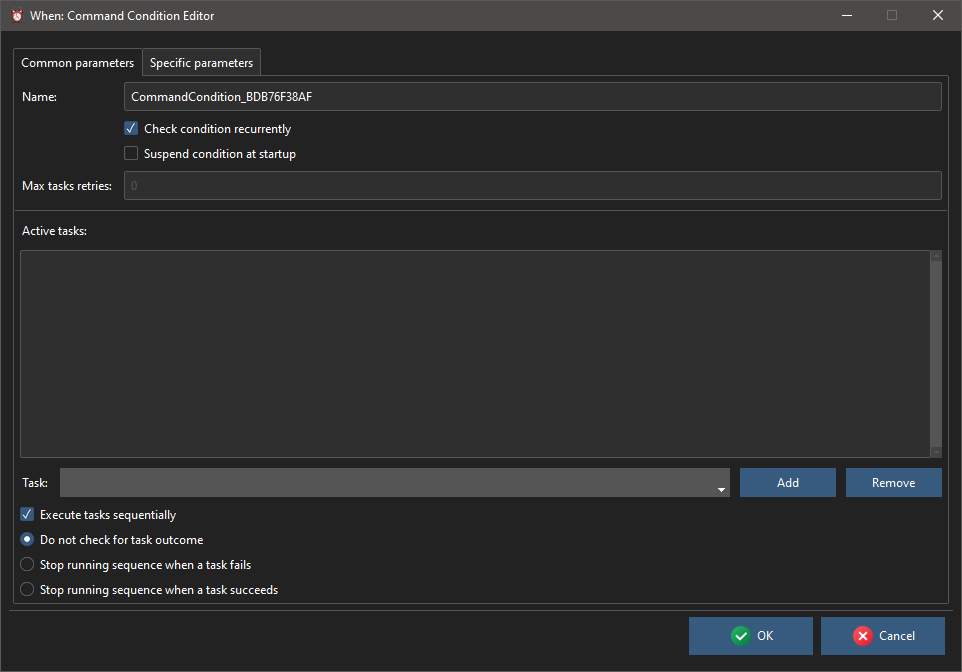

Condition Editors
All condition editors share a common part, which encompasses all parameters that are common to all condition items:

It allows to set the mandatory item Name (an alphanumeric string beginning either with a letter or an underscore[1]), the tasks associated with it, and to decide other behaviors specific to conditions:
Check Condition Recurrently: when set, the condition is continuously re-checked even after its verification, becoming recurrent. By default a verified condition stops being checked after the first occurrence, unless a reset conditions command is sent via the system tray menu.
Max Task Retries: when greater or equal to
0, the number of times that the underlying scheduler will retry to run the associated task or list of tasks in case one of them fails (of course0means only one check and no retries); a value of-1means that the scheduler will try to run the associated task(s) forever until they all succeed. Only available if the Check Condition Recurrently flag is set.Suspend Condition at Startup: to start the condition in suspended mode, which means that it will not be checked during the session.
The central list displays the list of tasks associated with the condition, in the order in which they would be run in case the Execute Tasks Sequentially box is checked (otherwise, all tasks are spawned simultaneously). To add a task to the list, it must be selected from the drop down list below the list and the Add button must be clicked. To remove a task, it must be double clicked on the list (or selected in the drop down list, with the same effect) and the Remove button has to be clicked. Note that all occurrences of the task displayed in the text box are removed from the list.
When the tasks are set to be run sequentially, the behavior upon success or failure of one of them (that is: stop the sequence on either success or failure) can be specified, by clicking the appropriate option, respectively the Stop Running Sequence when a Task Succeeds/Fails options. Leave the Do Not Check for Task Outcome selected to ignore the outcome of the associated tasks.
These are the parameters that appear on the Common Parameters tab: the Specific Parameters tab, instead, varies according to the type of condition that is being edited.
The conditions available in When that are natively supported by whenever are the following:
Other conditions are supported, that are implemented as reactions to particular commands, DBus messages or method invocations, WMI events or queries, Lua scripts. These conditions appear along with the native ones, and the related documentation can be found at the following locations:
System Load below Threshold conditions
Battery Charge below Threshold conditions
Battery Charge above Threshold conditions
Removable Drive available conditions
Session Locked (Windows only) conditions
The above list will grow with time, along with the discovery of new configuration possibilities on the supported platforms and the development of the related forms.